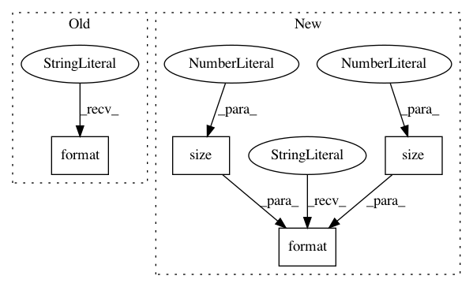

dd9a4fdb10bbe81fbddce52710ba2761f64f7610,torch_geometric/nn/models/node2vec.py,Node2Vec,__repr__,#Node2Vec#,155
Before Change
test_y.detach().cpu().numpy())
def __repr__(self):
return "{}({}, {}, p={}, q={})".format(self.__class__.__name__,
self.num_nodes,
self.embedding_dim, self.p,
self.q)
After Change
test_y.detach().cpu().numpy())
def __repr__(self):
return "{}({}, {})".format(self.__class__.__name__,
self.embedding.weight.size(0),
self.embedding.weight.size(1))
In pattern: SUPERPATTERN
Frequency: 4
Non-data size: 4
Instances
Project Name: rusty1s/pytorch_geometric
Commit Name: dd9a4fdb10bbe81fbddce52710ba2761f64f7610
Time: 2020-05-23
Author: matthias.fey@tu-dortmund.de
File Name: torch_geometric/nn/models/node2vec.py
Class Name: Node2Vec
Method Name: __repr__
Project Name: pytorch/examples
Commit Name: 77a6ec73c53c5cc62a2ae451694537144afa5644
Time: 2016-09-14
Author: alerer@fb.com
File Name: mnist/main.py
Class Name:
Method Name: test
Project Name: arraiy/torchgeometry
Commit Name: f29fe9adc0cfd99ae0689f548d13f9822baae39f
Time: 2020-01-08
Author: ducha.aiki@gmail.com
File Name: kornia/losses/focal.py
Class Name:
Method Name: focal_loss